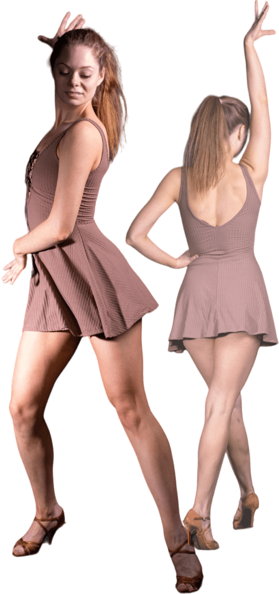

Мене звати Катерина Нанай і я тренер з танців, фітнесу та розтяжки, а ткож Ваш помічник у сферы правильного харучання та здорового способу життя.
В даний момент я проводжу тренування з фітнесу та розтяжки на свіжому повітрі на 2х локаціях: Сирецький парк, ЖК "Місто квітів". На цих тренуваннях ми прокачуємо основні групи м’язів за допомогою різноманітного навантаження
Дізнатися більшеВ даний момент я проводжу тренування з фітнесу та розтяжки на свіжому повітрі на 2х локаціях: Сирецький парк, ЖК "Місто квітів". На цих тренуваннях ми прокачуємо основні групи м’язів за допомогою різноманітного навантаження
Дізнатися більше 
На регулярный основі я проводжу майстер класи з направлень: стріп
пластика, латина.
Стріп пластика - направлення, яке буде актуальним для кожної дівчини в
будь-якому віці. Тут про звабливі стегна, хвилі, пластичні рухи,
впевненість в собі, розкутість, закоханість в свою жіночність та красу.
Латина - запальний напрям, завдяки якому твоє тіло стане більш
підтягнутим, а настрій однозначно покращиться. Танцюємо під популярні
треки, які не залишать нікого байдужими.
Індивідуальний план харучання відбувається під Ваші цілі з врахуванням Ваших індивідувальних особливостей.
Дізнатися більшеІндивідуальний план - це написання 12 тренувань (вправи + відео розбір техніки) згідно Вашої цілі тренувань (схуднення, набір мязів, сушка, утримання форми)
Дізнатися більшеКурс для тих, хто стомився від одноманітних тренувань та вправ. Танцюй під поулярні треки прості зв'язки, підспівуй і худни, хіба це не мрія кожної дівчини?
Дізнатися більшеТи давно хотіла навчитися танцювати латиноамериканські танці, але не маєш партнера? Тепер це реальність з курсом Bachata Ladt Style. Вивчи основні рухи, роботу рук, стегон не виходячи з дому і вже цим літом зможеш запалити на усіх вечірках.
Дізнатися більше